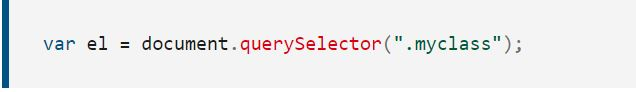
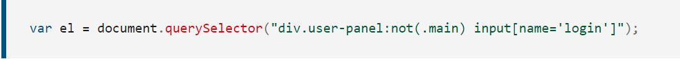

Phương thức document.querySelector () hoạt động như thế nào?
Nếu bộ chọn được chỉ định khớp với một ID được sử dụng không chính xác nhiều lần trong tài liệu, phần tử đầu tiên có ID đó sẽ được trả về.
Phần tử giả CSS sẽ không bao giờ trả về bất kỳ phần tử nào, như được chỉ định trong API Bộ chọn./p>
Để đối sánh với một ID hoặc các bộ chọn không tuân theo cú pháp CSS chuẩn
(ví dụ: bằng cách sử dụng dấu hai chấm hoặc dấu cách không thích hợp), bạn phải thoát ký tự bằng dấu gạch chéo ngược ("\").
Vì dấu gạch chéo ngược cũng là một ký tự thoát trong JavaScript, nếu bạn đang nhập một chuỗi ký tự,
bạn phải thoát nó hai lần (một lần cho chuỗi JavaScript và lần khác cho querySelector ()):
Trong ví dụ này, phần tử đầu tiên trong tài liệu có lớp "myclass" được trả về:
Các bộ chọn cũng có thể thực sự mạnh mẽ, như được minh họa trong ví dụ sau.
Ở đây, phần tử "input" đầu tiên có tên "login" ("input" name = "đăng nhập")
Vì tất cả các chuỗi bộ chọn CSS đều hợp lệ, bạn cũng có thể phủ nhận bộ chọn:
Thao tác này sẽ chọn đầu vào có div cha với lớp bảng điều khiển người dùng nhưng không phải lớp chính.
Khi sử dụng document.querySelector()đường truyền bắt đầu tại document nút.
Đây có thể là một hoạt động thực sự tốn kém nếu tài liệu có nhiều nút.
Nếu bạn biết các phần tử cụ thể mà bạn muốn chọn trực tiếp dưới một nút cụ thể thì bạn có thể bắt đầu tại nút đó.
Điều này là do phương thức querySelector được kế thừa thông qua tất cả các nút html DOM.